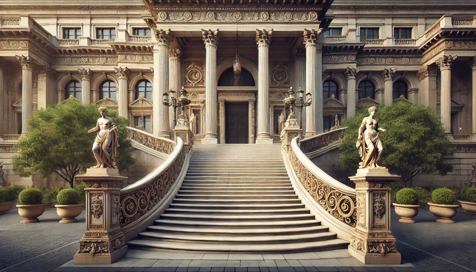

ABOUT
Our mission at the Museum of AI Art is to display AI's computational power and show how easy it is to create art without learning the skills. We are constantly expanding our gallery with work created by AI worldwide to help inspire people to get out there and have AI generate their ideas by compiling the work other people did.
When Generative AI began to spike in popularity in 2022, we saw the sheer potential behind having a program create art. AI models like CoPilot, ChatGPT, and Midjourney streamlined the process of art to a degree never seen before. Now, anyone can generate any art they want without any of the thought, skill, or challenges behind creating art. Instead of spending hours pouring their heart and soul into their work, we could replace the art process all in one single line of text. We knew that the future of art didn't lie in the people's will to express themselves or their creative abilities but in the computational power of a machine. Now, 10 years later, we are the forerunners in a new age of art, hosting pieces from around the world created by AI.
Emmet Gillroy was originally an aspiring young artist who sought to revolutionize the art industry. After failing out of art school due to “plagiarism,” Emmet wanted to help everyone get their ideas out into the world, no matter how little work they wished to put in. After spending 30 minutes compiling art from online users using AI, Emmet created the first virtual gallery, which soon evolved into the Museum of AI Art. Now, the once-outcast artist who relied on ChatGPT could show the world that creativity is generative.